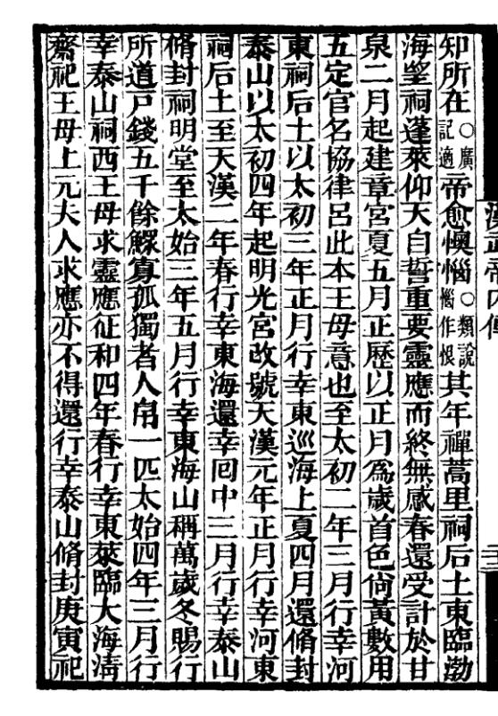
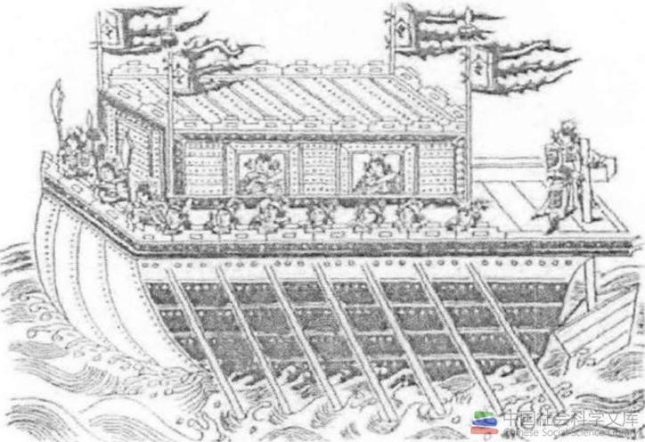
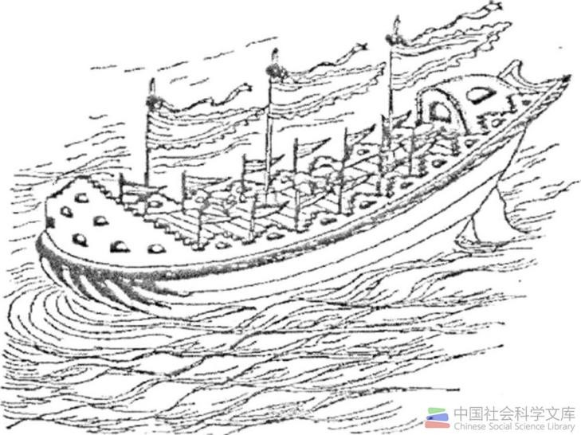
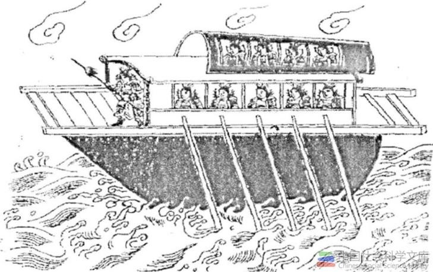

汉武帝曾七次巡海，不但年矩很近，有时一年一次，而且直到他死去的前两年，在69岁高龄时还在巡海。
第一次巡海：元封元年（公元前110年）春正月，汉武帝首次东巡海上。 至东莱（今山东掖县），齐人趁机上言海上故事者不下万人。他派出了与徐福东渡规模相等的数千人的大船队探寻通日本之路。 甚至要亲自率船队出海赴蓬莱求仙人。经群臣苦谏才罢。随后他便沿渤海巡行到碣石，向东巡行到辽西，后于五月回都城长安。
第二次巡海：元封二年（公元前109年）春正月，仅距第一次巡海六个月， 武帝再巡东莱留居数月，求神仙无所见。四月回长安。秋，派左将军荀彘〔Zhì治〕从辽西出兵， 楼船将军杨仆率将水军5万从山东渡渤海水陆夹攻朝鲜。这次两路进军路线与武帝第一次巡行东莱和赴辽西路线相同。 可知这次巡海仍为开通对日航线。次年，由于朝鲜统治集团内部分裂，卫氏朝鲜亡。武帝在卫氏朝鲜统治区设真番（今朝鲜开城一带）、 临屯（今朝鲜咸镜南道南部）、乐浪（今朝鲜平壤南）、玄菟〔tù兔〕（今辽宁清源附近）四郡，以开拓海外航路。此后，中日航线的中间障碍（朝鲜）被打通， 汉人大量迁徙到朝鲜、日本，倭人也能经朝鲜来中国。
出自《汉武帝内传》，作者不详
第三次巡海：元封五年（公元前106年）冬，武帝先南巡江西、湖南长江中下游造船基地，再从浔阳（今江西九江、湖北黄梅一带） 率一只大船队“自浔阳浮江，射蛟江中，获之”。顺江而下，到安庆视察了安庆以下菜子湖口的枞阳（安徽枞阳）造船基地，又增添船舰及水兵然后 “舳舻〔zhúlú逐卢〕①千里，薄（通泊）枞阳而出”，顺江而下，出长江口，入东海，沿海北上至琅邪。三月，返至泰山，四月回长安。 对长江下游及沿海来说，庐江（安徽安庆及枞阳一带）水师基地比浔阳（江西）水师基地更为重要。
第四次巡海：元封六年（公元前105年）十月，武帝东巡至海上，查元封元年派遣出海寻仙船之下落，因未见返航，再派第二批船队出海东渡。
第五次巡海：太初三年（公元前102年）春正月，武帝又东巡海上求神仙并了解出海船队情况，仍未见返航。四月，封泰山，禅石阁（在泰山下，方士以为仙人之阁），还长安。
第六次巡海：太始三年（公元前94年）二月，武帝又东巡，求神仙，至琅邪，然后渡海到成山、芝罘，“渡大海而还”。
出自《武经总要》的斗舰
出自《武经总要》的走舸
出自《武经总要》的艨艟
第七次巡海：征和四年（公元前89年）春正月，武帝最后一次巡海至东莱，欲亲自浮海求神山，群臣谏阻不听，适逢海上大风十余日，海水沸涌，楼船不能出港，只得返回。 三月，武帝追悔以往的错误，采纳了田千秋的建议，取消了诸方士求神仙之事。 之后，武帝每对群臣自叹：“从前愚惑，为方士所欺。天下岂有仙人？全是妖妄，还是节食服药，少得点病就行了。”